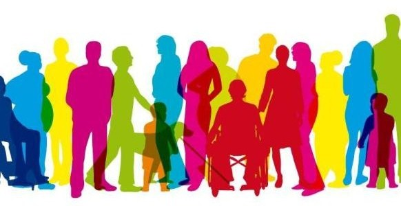

Historia
Vida de la Mujer Griega
En Grecia las mujeres no acostumbraban a salir, salvo para traer agua o visitar la casa de otra mujer. Los hombres se encargaban de las compras y de todos los asuntos familiares, esperando que las mujeres se quedaran en casa y mantuvieran el orden. Además de cocinar y limpiar las mujeres griegas debían tejer la ropa de toda su familia.
Desde el día del nacimiento hasta el de su muerte, una mujer de la antigua Grecia vivía bajo el control de los hombres. Su padre, sus hermanos -incluso sus hijos- tomaban decisiones que alteraban su vida. Las mujeres no podían votar ni tener un empleo publico, heredar o poseer propiedades…ni siquiera comprar algo que costara mas que un precio determinado.
Esclavitud en antiguo Egipto
De hecho, en los momentos más antiguos de la historia egipcia, la esclavitud supone un tema poco atestiguado. Así, las grandes pirámides de los monarcas de las Dinastías III y IV no se construyeron mediante ejércitos de esclavos, sino por los “fellahs” (agricultores arrendatarios).
Los esclavos egipcios recibían anualmente productos de primera necesidad, como lino o ropa, además de manutención y alojamiento. En el antiguo Egipto, los esclavos adquirieron ciertos derechos legales, puesto que eran considerados personas. Dependían de sus dueños para subsistir, pero no para su estatus legal, lo que les permitía intervenir en ciertas actividades, como testificar en un tribunal.
Clases Sociales
"Clase social" es un término que indica un estrato social en una sociedad y su estatus correspondiente, ya sea por el rango socioeconómico u otro motivo. Y es por eso que la diferenciación según el estrato social se convierte en otro tipo de discriminación.
En toda gran civilisacion, desde la antiguedad hasta hoy en dia, se manejan a las masas por estas clases. Los que tenian la suerte de nacer en familia de burgueses, reyes, gobernantes, tendrian la vida practicamente comprada. A comparacion de los que nacian en familia de obreros o hasta esclavos, ya que estarian destinados a serlo toda su vida, sin tener oportunidad de tracender.
